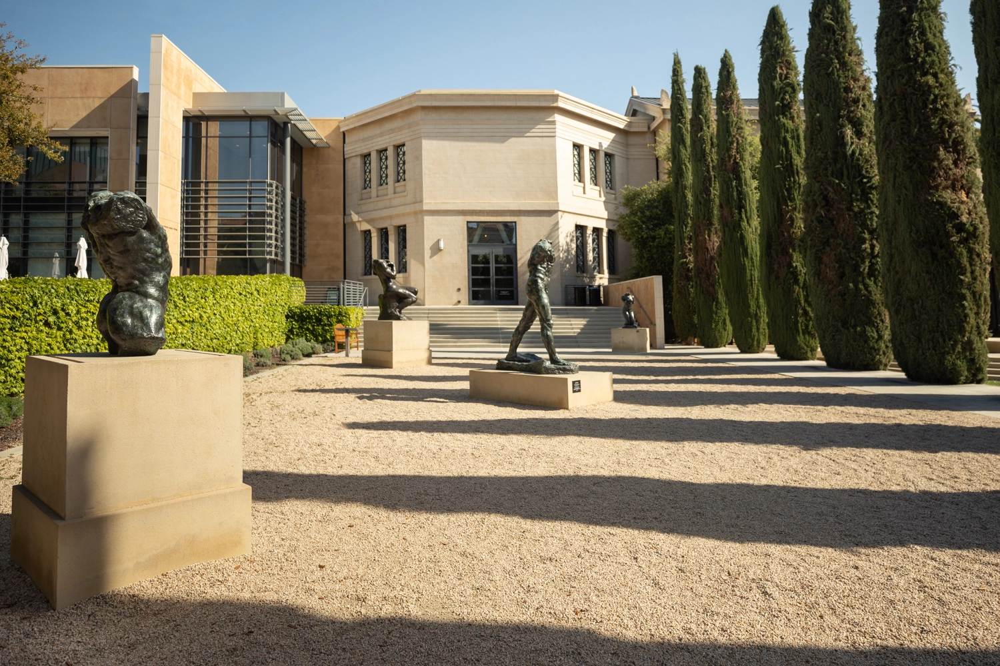
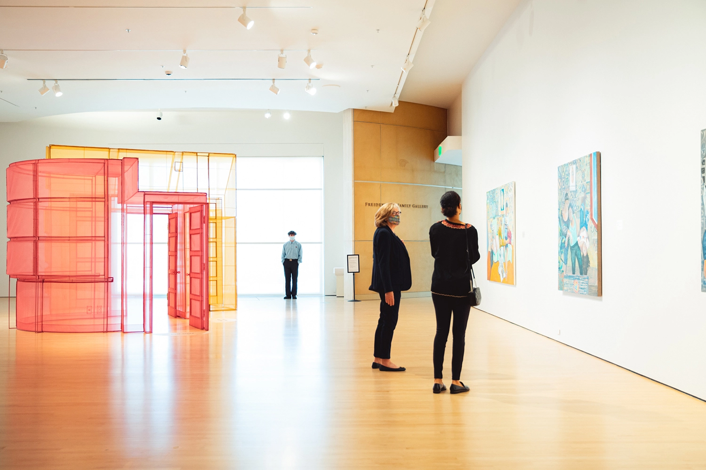
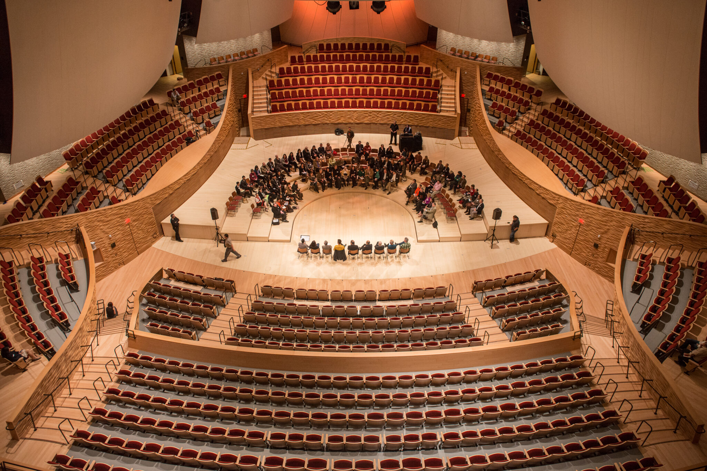

Vida de Estudiante
El campus de Stanford cuenta con una gran cantidad de instalaciones para los estudiantes, incluyendo bibliotecas, laboratorios, salas de conferencias, cafeterías, restaurantes, tiendas y centros deportivos. Los estudiantes también tienen acceso a recursos y servicios de apoyo, como servicios de asesoramiento, servicios de salud y bienestar, servicios de carrera y servicios de tutoría.
Arte y Cultura

Las Artes en Stanford
Stanford tiene una rica tradición de fomentar la creatividad y las artes.
Un vibrante "distrito de las artes" del campus está situado a lo largo de Palm Drive, cerca de Oval.

Museos
El campus de Stanford alberga dos museos de arte de clase mundial.

Las Artes Escénicas
Stanford Live presenta una amplia gama de actuaciones y experiencias distintivas de las artes escénicas.